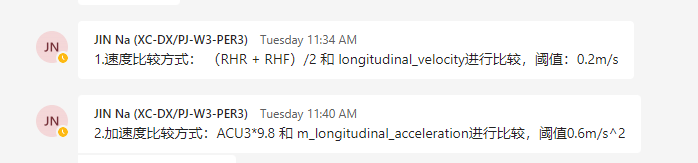

Input Signal Data Checklist
Color schema description
Black: Original needs information
Blue: After PMT+VER is connected with related personnel, the Comment given by PMT+VER.
With deletion of the line font: the two parties have a heavy communication in the meeting, and the needs that can be deleted by the above confirmation
 Have been realized
Have been realized  Unrealized
Unrealized  There are technical problems such as performance, but it has achieved difficulty in implementation
There are technical problems such as performance, but it has achieved difficulty in implementation
Docking information
GNSS/IMU: wang shiwei
CAN: xu zhonglin, hou tianyu
HVM: jin na
USS: Machile Zhong, guo hongming, chang haohua
Lidar: Wu Ye
CNWVIII-44677 - Jira issue doesn't exist or you don't have permission to view it.
Camera
Image Quality
Check whether the screen,
Flower screen: difficulty in testingCheck whether the image is up, down, left and right:
Difficult detectionCheck the resolution of the image, such as 1920 Pixel, 1080 Pixel wide ：
Bag is a fixed value, and the data level of the falling tray is irresistibleCheck the color of the image is RGB color:
After the data encoded in the baby data, the data is not detected.Check whether the image is over exposure, glare, too dark, noise and other abnormal conditions:
Difficult Detection in BAG
Comments: According to negotiation, such inspections cannot be implemented at the BAG level.For example, the BAG is already recorded in the Jepm Compressed Image.
Timestamp
Check the current time: This problem cannot be judged by the upper application.We can only believe it.You can ask Mi Roy.The demand for this article cannot be implemented as a testable content, and there is no quantitative standard
Check whether the timestamp is accurate to milliseconds: the first question of the timestamp, we should pay more attention to the difference between Image Stamp as the current time (that is, the same hour of the same hour), which cannot exceed one threshold, such as 40ms.
[Wednesday 7:41 PM] SHI Yan (XC-DX/PJ-W3-PER5)
Otherwise, the data is too old.EssenceEssence
[Wednesday 7:42 PM] SHI Yan (XC-DX/PJ-W3-PER5)
For example, when we receive data, Li KangMao checks the new and old level of the data.
[Wednesday 7:42 PM] SHI Yan (XC-DX/PJ-W3-PER5)
XPER_INFO("current system time - hw timestamp: {}", static_cast
[Wednesday 7:44 PM] SHI Yan (XC-DX/PJ-W3-PER5)
Last_hw_timeStamp is timeStamp.AOS_TIME :: Time :: getcurrenttime (), get the current time of the public clock (GPTP)
Lidar[V]
Whether the number of laser points is normal (M1 laser is around 78,000) Checking method: (Check whether Pint is nan, nan < 2k for M2) Δ /A/netcom_gateway_master/xper_liper_point_cloud_senderport 计算量太大，检查速度非常慢，不建议在bag层面检查，10Hz，一帧数据15.2晚点，点内部还有嵌套，xyz等信息，FOR循环太大。
Is the timestamp of the laser point normal? (Each laser point should have a timestamp, and the difference is less than 100ms from the entire frame timestamp, CXPERPOINT_M_CAPTURE_TS VS CXPERPOINTCLOUDDA_M_HW_SENSOR_TS)
Is the strength value of the laser point normal
(M1 laser strength value CXPERPOINT_M_INTENSITY is in the 0-255 range. This inspection is not significant. Hardware can ensure that within this range, this inspection script is not realized)Is the ring information of the laser point normal? (M1 laser RING value CXPERPOINT_M_RING is 1-5, M2 is 0-4, ensuring 0-4, and requiring to know 0, 1, 2, 3, 4.undone
GNSS/IMU[V]
GNSS
Whether timeStamp meets the actual recording time:
Checking method: The SOC Time Source on the car has changed, and the power is zero.Therefore, this item cannot be checked.Whether the latitude and longitude of all related signals (INS_DATA/GPS_DATA, etc.) meet the current geographical location: For example, in China: latitude: about 30 ° -32 °, longitude: 117 ° -123 °. CNWVIII-46185 - Jira issue doesn't exist or you don't have permission to view it.
Whether the latitude and longitude of all related signals (ins_data/gps_data, etc.) is accurate to 7 digits of small data points, not only the data length, but also whether the seventh place in the seventh consecutive frame data during the exercise changes, whether
Or is it accurate to CM after converting to ENU coordinates and whether the trajectory is smoothEssence(The eye observation part is not in the script after the conversion.The INS logo can display the convergence state: In
The GNSS positioning status can be displayed in the RTK FIX state in the open scene (Insinterface_m_ins_Status, Insinterface_m_POS_TYPE#4), STD can see#5 from the Insinterface_M_LONGITUDE_STD).TODO
Get the latitude data of ins_data/gps_data, and the trajectory on Google Earth is consistent with the actual driving route
(It does not belong to the content of the script, but the visualization needs.The vehicle is running straight, and the mold of the INS speed is consistent with the speed of the CAN. (Compare the comparison check with the chassis SPEED, see the signal requirements for details#3, the actual inspection process involves the comparison of data of different frequencies, so there is a problem with the VERFICATION, that is, the test algorithm itself is credible)
|
insinterface_m_longitude:-8.145339871340473e-15 insinterface_m_altitude :2.0816681711721685e-14
Insinterface_m_pitch: -0.5930100083351135 should be very small, (-45, 45) #3
insinterface_delta_x -99.85999999955297 #4 #5 (<0.1m) |
IMU
Whether the IMU acceleration is consistent with the IMU acceleration and the CAN acceleration. (Counting the IMUX forward, it is not easy to check, the body of the body is still or at a uniform speed, observe the IMU's ACC's MOD is 9.8m/s.abnormal
imurawdatainterface_angular_velocity ）
Whether the Z direction of the IMU angle speed is consistent with the YAW Rate of the IMU angle speed. (Involved in external parameters, uncertainty is feasible. It is difficult to check the quality of the data under exercise)
CAN
Ensure that EPS_1, SAS_1, VCU_2A, VCU_9A, BCS_2A, BCS_5A, BCS_6A, BCS_8A, BCS_9A, BCS_10A, BCS_11A The CAN signal is inspected below:
Signal timestamp check.Use the previous ROSBAG to the TXT tool to check the difference between the timestamp of each CAN signal signal. The time stamp of the signal time stamp of each way should be almost equal, without losing frames, and shake.
Drive in line in line, check whether the relevant signals are consistent with the actual situation
Whether the speed signal is consistent with the speed of INS (Demand with the previous INS, the comparison of different frequency signals, there are problems such as interpolation, detect the credibility problem)
Whether the four -wheel speed is consistent with the speed of INS (Demand with the previous INS, the comparison of different frequency signals, there are problems such as interpolation, detect the credibility problem)
Drive a small distance from the car. (Related to the test scene strong, not detected)
Whether the number of four -wheel pulses changes when the vehicle is moved.When going forward, it is changing, and the negative changes when you retreat. (Related to the test scene strong, not detected)
Is the acceleration of AX and INS consistent (Demand with the previous INS, the comparison of different frequency signals, there are problems such as interpolation, detect the credibility problem)
When the direction is not turned, whether the corner is near 0, when the steering wheel is killed left/right, is the steering wheel near the positive and negative 400 °. (After the routine, the corner of Chery car is 428 degrees. This test is not significant)
TODO
Whether the block signal P, N, D, and R gear is consistent with the actual situation (Do not scripts test)
When the vehicle is still, is AX and AY 0 (Same as above, AX AY is shake, it will not be 0, the threshold is required, and the static detection algorithm is unreliable)
When the vehicle is still, when the vehicle moves forward, and retreats, is the direction of the wheel movement consistent with the actual situation? (The same above, the threshold is required, and the static detection algorithm is unreliable)
When the car will be quiet, is yawrate 0 (The same above, the threshold is required, and the static detection algorithm is unreliable)
HVM_port_if [V]
It turned out to be SOC. Now after the architecture is adjusted, it is on the MCU.Under normal circumstances, HVM is okay. Now it is found that it may be due to hardware problems. There are suspected frequency reduction, and the frame rate may be wrong.ROOT CAUSE Unknown. HVM value is no problem, mainly frequency.
Make sure that HVM has normal output:
HVM frequency correctly check: Observe whether the number of HVMs in the Δt period is equal to (50*Δt), and check whether the difference between the timestamp m_timestamp_ns is 20ms.
ChvmoutPutInterface_m_timestamp_ns is t0 can signal data seems to have problems, chvmoutputinterface_m_tabsReftime T1.HVM Cycle IS 50Hz, leakage frame (no missing frame), check the interval (-3, 3);
HVM output results check, the vehicle is driving straight, check whether the relevant signals are consistent with the actual situation
Whether the speed signal is consistent with the speed of INS: （-0.01m/s， 0.01m/s）CAN signal to HVM signal ratio: output_onebox_4_data and and chvm_output_senderport (the same as the previous ins, different frequency signals have problems such as interpolation, detect the problem of credibility)
AX (ChostvehicleMovementStateSpyhsicalValue_m_longITUDINAL_ACCELERATION) is consistent with ins: Todo confirmed in the afternoon: Todo issued: Todo issued in the afternoon:CAN signal to HVM signal ratio: Output_acu_3_Data and CHVM_OUTPUT_SENDERPORT (the same as the previous INS requirement, different frequency signals have interpolations and other problems, detect the credibility problem)

CNWVIII-46809 - Jira issue doesn't exist or you don't have permission to view it.
When the direction is not turned, whether the corner is around 0, when the steering wheel is killed left/right, whether the steering wheel is near the positive and negative 400 ° (the death of the Chery car is +/- 428 °).Consistent with the corner of offset, within (-4, 4) degree. [Check Input Signals V1.2 Input Signals V1.2] HVM_port_if (Ibid above, the scene cannot be judged)
Rotate the steering wheel, whether the value of the steering wheel rotating the steering wheel is consistent with the signal on the Can: HVM OUTPUT STEERING ANGLE VS Network Steering Angle/A/Netcom_gateway_Master/OUTPUT_SAS_1_DATA. (-2, +2) degree
(Ibid above, the scene cannot be judged)
When the vehicle is still, is AX and AY 0 （+/-0.0001）(Ibid above, the scene cannot be judged)
Whether the vehicle moves forward and retreats, is the direction of the wheel movement consistent with the actual situation: xu zhonglin(Ibid above, the scene cannot be judged)
When the vehicle is still, is yawrate 0 (+/- 0.01), whether the state is 3(Ibid above, the scene cannot be judged)
Radar[V]
RADAR outputs a Can signal (can be ignored, not the censorship point for XPER)
Refer to DBC to check whether all RADAR -related CAN signals can be accepted
Detect the frequency of accepting RADAR -related CAN signals.
Observation needs to perform the Block Counter of Block Control's CAN signal is normal
Check whether RADAR time synchronization is normal
It is estimated that the transmission delay of the RADAR -related CAN signal is within a reasonable range, E.G. ~ 20ms.
In a simple test environment, if there is a dynamic target (rabbit car), observe whether there is a change in the signal value of the SGU target
The packing signal output from DASY (can be ignored, not the censorship point for XPER)
Check whether the DASY BSW can output the radar data of the unpacking normally, and you should focus on the signal of the Block Control.
Check whether the RADAR data output frequency of the DASY BSW parsing group package conforms to the definition of DBC and whether there is a large number of frame loss
Check whether the RADAR data of the DASY BSW parsing group package is complete and whether there is a lack of some signals in a block
Check whether the RADAR data timestamp of the DASY BSW parsing group is synchronized with other sensors
Analyze whether the delay of the DASY BSW parsing group package is in an acceptable range, E.G. < 100ms
In a simple test environment, if there is a dynamic target (rabbit car), observe whether there is a change in the signal value of the SGU target
SOC receiving signal
Check whether the Ethernet output of DASY can be normally solved by netcom
(Checking method: Follow the signal/a/netcom_gateway_master/radar_rfc_sgu Topic exists? Is it worth it?)
monitor fc_frm_header_FRM_1_ObjHd_ValidObjCount !=0 ， First goal fc_frm_FRM_ObjID ！=0）TODO
Check whether the frequency of the RADAR packet parallel of NetCom analysis conforms to the DBC definition:
Checking method: The front radar is about 66ms.TODO checking cycle and range, repeated the overall timestamp check logic.
Check whether the RADAR packet timestamp obtained by NETCOM analysis keeps synchronized with other sensors, and the time difference is within the acceptable range. E.G. < 100ms
Checking method: Reuse the overall TimesStamp check logic.FC_FRM_HEADER_FRM_1_OBJHD_OBJTIMESTAMP, you need to confirm the meaning of specific Timestamp
FC_FRM_HEADER_FRM_1_OBJHD_OBJTIMESTAMPSTS needs to be checked.TODO DBC SHARING
In a Simple Test Environment, if there is a dynamic target (Rabbit Car), Observe WHETHER theRE is a change in the signal value of the SGU TARGET. (Limited to the requirements of the test venue, the following will not be checked. The above three points have been covered. If the above methods are invalid, consider additional inspection conditions)
RFC_ObjHdr_TimeStamp / RFL_ObjHdr_TimeStamp / RFR_ObjHdr_TimeStamp / RRL_ObjHdr_TimeStamp / RRR_ObjHdr_TimeStamp
RFC_ObjHdr_TimeLatency / RFL_ObjHdr_TimeLatency / RFR_ObjHdr_TimeLatency / RRL_ObjHdr_TimeLatency / RRR_ObjHdr_TimeLatency
RFC_SGU_ID / RFL_SGU_ID / RFR_SGU_ID / RRL_SGU_ID / RRR_SGU_ID
RFC_SGU_Valid / RFL_SGU_Valid / RFR_SGU_Valid / RRL_SGU_Valid / RRR_SGU_Valid
RFC_SGU_Dx / RFL_SGU_Dx / RFR_SGU_Dx / RRL_SGU_Dx / RRR_SGU_Dx
RFC_SGU_Dy / RFL_SGU_Dy / RFR_SGU_Dy / RRL_SGU_Dy / RRR_SGU_Dy
RFC_SGU_Vx / RFL_SGU_Vx / RFR_SGU_Vx / RRL_SGU_Vx / RRR_SGU_Vx
RFC_SGU_Vy / RFL_SGU_Vy / RFR_SGU_Vy / RRL_SGU_Vy / RRR_SGU_Vy
06-30 Only/a/netCom_gateway_master/Radar_rfc data. The above demand name still needs to be changed.
USS[]
Check WHETHER the Ethernet Output of Dasy Can Be Normally Solved by NETCOM
Check whether the frequency of the USS packet of Netcom parsing conforms to the definition
Check whether the USS packet timestamp obtained by NETCOM analysis keeps synchronized with other sensors, and the time difference is within the acceptable range. E.G. < 100ms
In a simple test environment, such as the parking lot environment, can it output a reasonable amount of USS Object (Do not automate the script test, it cannot quantify the standard)